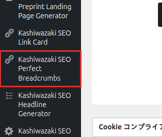

インストール・初期設定
Kashiwazaki SEO Perfect Breadcrumbs のインストール方法と、パンくず表示に必要な基本設定を説明します。
インストール手順
WordPress管理画面から プラグイン > 新規追加 に移動し、「Kashiwazaki SEO Perfect Breadcrumbs」を検索します。または、プラグインのZIPファイルを プラグイン > 新規追加 > プラグインのアップロード からアップロードします。
「今すぐインストール」をクリックし、インストール完了後「有効化」をクリックします。
管理画面の左メニューに「Perfect Breadcrumbs」が追加されます。クリックして設定画面を開きます。

有効化直後から、デフォルト設定でパンくずナビゲーションが表示されます。必要に応じて以下の設定を調整してください。
基本設定
デザインパターン
6種類のデザインパターンから、サイトのテーマに合ったスタイルを選択できます。
| パターン名 | 説明 |
|---|---|
| クラシック | シンプルなテキストベースのパンくず。多くのテーマと調和します。 |
| モダン | 洗練されたフラットデザイン。現代的なサイトに最適です。 |
| ラウンド | 丸みを帯びた角のデザイン。柔らかい印象を与えます。 |
| アロー | 矢印型の区切りを使用したナビゲーションスタイル。 |
| アンダーライン | 下線でリンクを強調するミニマルなデザイン。 |
| ボックス | 各項目をボックスで囲んだ視認性の高いデザイン。 |
デザインパターンはフロントエンドのCSSのみ（7KB）で実装されており、JavaScriptは使用しません。Core Web Vitalsに影響を与えません。
フォントサイズ
パンくずナビゲーションのフォントサイズを 10px〜24px の範囲で設定できます。デフォルトは14pxです。テーマの本文テキストと調和するサイズを選んでください。
表示位置
パンくずの表示位置を27種類のフックポジションから選択できます。代表的な位置は以下のとおりです。
| 表示位置 | 説明 |
|---|---|
| 記事タイトルの上 | 投稿・固定ページのタイトル直前に表示します。最も一般的な配置です。 |
| 記事タイトルの下 | タイトルとコンテンツの間に表示します。 |
| コンテンツの前 | 記事本文の直前に表示します。 |
| コンテンツの後 | 記事本文の直後に表示します。 |
| 手動（ショートコード） | [kspb_breadcrumbs] で任意の場所に挿入します。 |
テーマによっては一部のフックポジションが利用できない場合があります。パンくずが表示されない場合は、別の表示位置を試すか、ショートコードをご利用ください。
ホームテキスト
パンくずの先頭に表示されるホームページへのリンクテキストを設定します。デフォルトは「ホーム」です。サイト名やアイコンに変更することもできます。
区切り文字（セパレーター）
パンくず項目間の区切り文字を設定します。一般的な区切り文字は以下のとおりです。
| 区切り文字 | 表示例 |
|---|---|
| > | ホーム > カテゴリ > 記事タイトル |
| / | ホーム / カテゴリ / 記事タイトル |
| » | ホーム » カテゴリ » 記事タイトル |
| › | ホーム › カテゴリ › 記事タイトル |
JSON-LD構造化データ
本プラグインは BreadcrumbList スキーマの JSON-LD を <head> 内に自動出力します。この設定はデフォルトで有効になっており、特別な設定は不要です。
出力される JSON-LD の例:
{
"@context": "https://schema.org",
"@type": "BreadcrumbList",
"itemListElement": [
{
"@type": "ListItem",
"position": 1,
"name": "ホーム",
"item": "https://example.com/"
},
{
"@type": "ListItem",
"position": 2,
"name": "カテゴリ",
"item": "https://example.com/category/"
}
]
}JSON-LDの出力は Googleリッチリザルトテスト で確認できます。